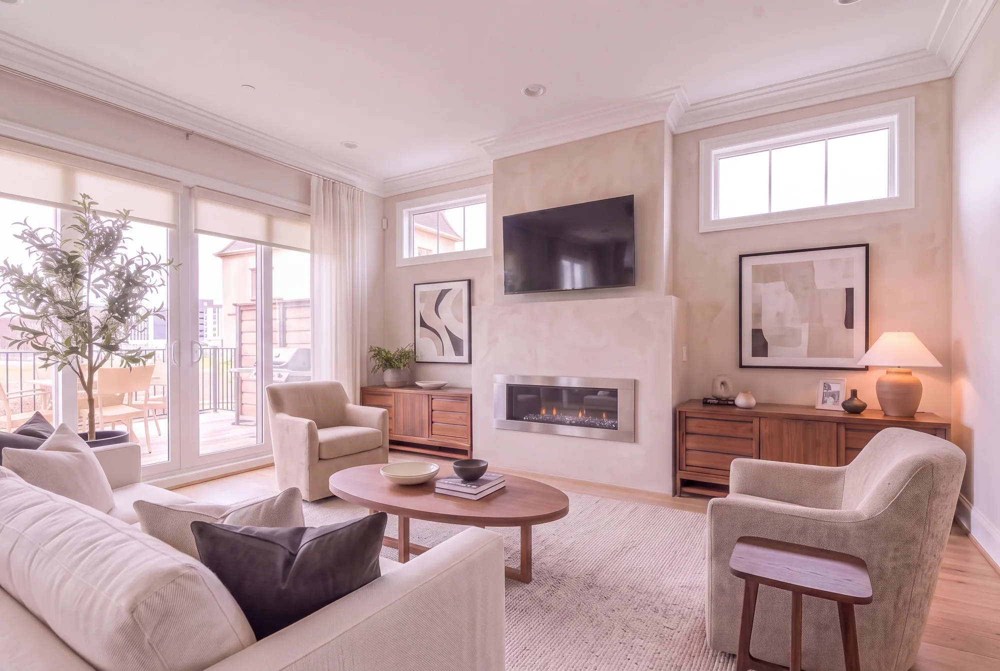
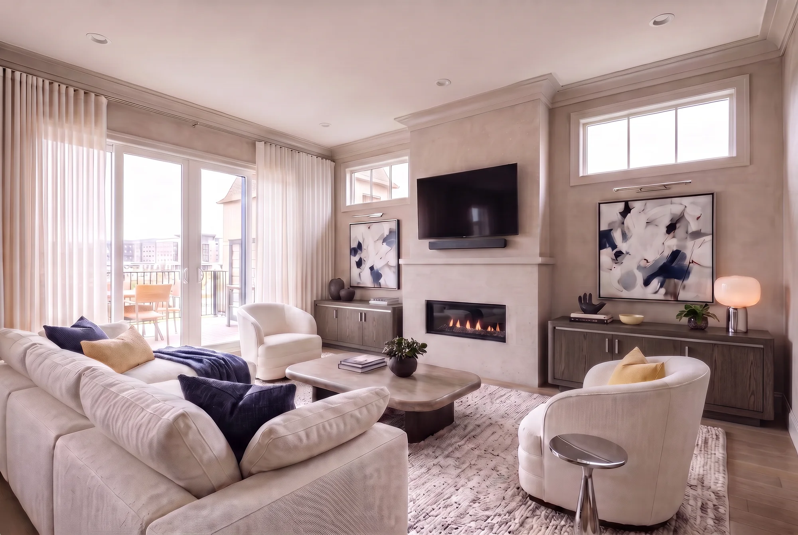

The City Home · Georgetown
Designs.
Choose a direction to find its room renders, furniture and build details together.
 Original reference→
Original reference→The original Georgetown model home
The builder’s furnished home, preserved as our starting point. Classic trim, warm wood, patterned wallcoverings and statement lighting give each room its original character.
View Model Home→
Option 1→Warm modern living, with a boutique-hotel feel
Warm mineral walls, natural oak and rich walnut with selected pearl onyx-, quartzite- and limestone-look porcelain. Ivory, oatmeal and charcoal textiles preserve the original bedroom identities; exposed oak stairs connect the floors.
Explore Option 1→
Option 2→Brown oak, polished stainless, white upholstery, blue & butter yellow
Brown oak and polished stainless connect varied cabinet and console designs, all on solid bases without legs. White Cloud seating, warm stone walls, natural oak floors and off-white drapes frame blue artwork, small butter-yellow accents and plants.
Explore Option 2→